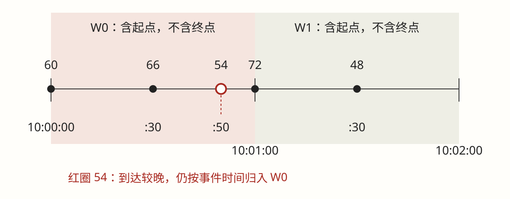

无损编码与压缩
利用时间和值的规律减少字节，解码恢复原始点
五个速度点按分钟分窗，迟到数据修正窗口均值
 VER. 2608
Built with impress.js
VER. 2608
Built with impress.js
事件时间决定窗口归属，原始数值决定统计结果
同日同一时区；速度单位 km/h，按事件时间分组

W0=[10:00,10:01)，W1=[10:01,10:02)；10:01:00 的 72 只属于 W1
LFV5001 是教材式示例车辆编号，非完整 VIN；本例均为模拟数据
| 字段 | 本例约定 |
|---|---|
| 序列 ID | LFV5001.speed 与 LFV5001.pressure |
| 数值单位 | 速度 km/h；胎压 kPa |
| 事件时间 | 测量发生时刻，本例按它分窗口 |
| 到达时间 | 服务器收到记录的时刻，可能晚于事件时间 |
| 时间基准 | 2026-10-23，+08:00；存取时保持同一基准 |
关系表也能保存序列；时序模型与优化取决于观测语义和读写方式
教材用 Point、Record、Tablet 区分三种写入形态；具体接口因产品而异
| 形态 | 上传内容 | 数据要求 |
|---|---|---|
| 单点 Point | speed 在 10:00:30 为 66 | 序列、时刻、值 |
| 记录 Record | 10:00:00 同时报 speed=60、pressure=240 | 指标和值一一对应 |
| 批量段 Tablet | speed 时间 [10:01:00,10:01:30]，值 [72,48] | 数组对齐、重复与失败规则 |
批量可减少调用次数；整批原子性由接口约定，失败重试须处理重复
五个点均已收到；查询范围为 [10:00,10:02)
| 请求 | 结果 |
|---|---|
| 返回原始点 | 五条事件时间与速度值 |
| 整个范围的样本平均 | (60+66+54+72+48)/5=60 |
| 按一分钟窗口平均 | W0=60，W1=60 |
| 保存分钟结果供长期查询 | 两条窗口汇总，属于一种降采样 |
分钟平均值降低时间分辨率，单凭均值无法还原原始点
五个点都到齐后，每个窗口只统计属于自己的数据
| 窗口 | 速度值 | 总和 / 点数 | 样本均值 |
|---|---|---|---|
| W0 | 60、66、54 | 180 / 3 | 60 |
| W1 | 72、48 | 120 / 2 | 60 |
左闭右开使边界只计一次；空窗口输出空值或无行，均值不默认为 0
独立保持假设：W0 各值持续到下一采样时刻，末值持续到窗口结束
| 区间 | 保持的速度 | 持续秒数 |
|---|---|---|
| 10:00:00—10:00:30 | 60 | 30 |
| 10:00:30—10:00:50 | 66 | 20 |
| 10:00:50—10:01:00 | 54 | 10 |
样本均值为 60；按保持时长加权为 (60×30+66×20+54×10)/60=61
摘取三个时刻；胎压仅在 10:00:00 和 10:01:00 有观测
| 事件时间 | 速度 km/h | 胎压 kPa |
|---|---|---|
| 10:00:00 | 60 | 240 |
| 10:00:30 | 66 | 缺失 |
| 10:01:00 | 72 | 238 |
缺失胎压可前值填充为 240；须标为推定、限定有效间隔，原始测量仍缺失
独立小例：同一窗口、同一速度单位，两辆车采样次数不同
| 车辆 | 采样值 | 各车样本均值 |
|---|---|---|
| LFV5001 | 60、80 | 70 |
| LFV5002 | 20 | 20 |
各点等权：(60+80+20)/3≈53.33；各车等权：(70+20)/2=45
对齐按时间并排显示指标；汇聚按同一统计定义合并序列
| 操作 | 输出形态 | 本例用途 |
|---|---|---|
| 多序列对齐 | 一行时间，多列指标 | 速度与胎压并排显示 |
| 按车队汇聚 | 每个窗口一个车队统计值 | 比较同单位速度序列 |
| 错误地混合单位 | 混算速度与胎压 | 没有所需的业务含义 |
按标签或层级分组汇聚时，须统一序列身份、时间基准、单位和权重
10:00:50 测得速度 54，直到 10:01:10 才被服务器收到
| 阶段 | W0 已知点 | 结果版本 |
|---|---|---|
| 补报前 | 60、66；总和 126，点数 2 | v1：均值 63 |
| 补报 54 后 | 60、66、54；总和 180，点数 3 | v2：均值 60 |
本例按事件时间分窗，迟到的 54 归入 W0；到达时刻用于判断迟到期限
本例约定每条序列每个事件时刻只有一个逻辑观测
| 收到的消息 | 本例处理 |
|---|---|
| 首次收到 (10:00:50,54) | 写入该点，W0 点数由 2 变 3 |
| 相同序列、时刻和值重发 | 识别为重复，点数仍为 3 |
| 同一时刻改报另一个值 | 按修订版本或冲突规则处理 |
| 同一时刻确有多次合法测量 | 增加序号以区分各次观测 |
界面按“序列＋窗口”定位，用较新版本替换旧值：v2 的 60 覆盖 v1 的 63
教学策略：W0 结束后再接受 30 秒补报，截止时刻不含在内
| 到达时刻 | W0 事件的处理 |
|---|---|
| 10:01:10 | 在期限内，更新窗口结果 |
| 10:01:29 | 仍在期限内 |
| 10:01:30 或之后 | 进入补算队列，不自动改实时结果 |
迟到期限与修订方式由业务约定；超期数据未补算时，实时结果可能不完整
按教材简化文件结构说明；不同格式版本可能有不同组织方式
| 结构 | 本例职责 |
|---|---|
| TsFile 数据区 | 包含若干数据组 Chunk Group |
| 数据组 Chunk Group | 把相关序列的数据块放在一组 |
| 数据块 Chunk | 组织某条序列的一段数据及多个 Page |
| 数据页 Page | 保存一批编码后的时间与值 |
| 索引与统计 | 定位数据块，并判断哪些数据需要读取 |
序列可跨多个块或文件，一个数据组也可包含多条序列
查询按速度序列和时间范围定位数据；以下为教材简化过程
Page 组织编码与解码；一次操作系统 I/O 读取的范围由实现决定
独立页布局示例：查询 [10:00,10:01) 的速度样本平均值
| 页内事件时间 | 与窗口关系 | 处理 |
|---|---|---|
| P0：09:59:00—09:59:50 | 完全在窗口之前 | 跳过 |
| P1：10:00:00、10:00:30 | 所有点在窗口内 | 可用 SUM=126、count=2 |
| P2：10:00:50、10:01:00 | 仅首点在窗口内 | 读取后仅保留 54 |
P2 筛出 54，排除窗口外的 72；合并均值为 (126+54)/(2+1)=60
独立分组示例，把五个速度点放进两个统计组
| 统计组 | 值 | 总和 / 点数 | 均值 |
|---|---|---|---|
| A | 60、66 | 126 / 2 | 63 |
| B | 54、72、48 | 174 / 3 | 58 |
正确合并为 (126+174)/(2+3)=60；直接平均两组均值会错算成 60.5
独立条件：取 W0 中速度 >60 的点，再计算样本平均值
| 可用信息或条件 | 能否回答当前问题 |
|---|---|
| 摘要只给出总和 180、点数 3 | 仅凭 SUM/count 不能算出筛选后的均值 |
| 原始值中仅 66 满足 >60 | 筛选后仅一个点，均值为 66 |
| 如果页的最大值≤60 | 此页不可能有匹配点，可跳过 |
摘要须对应当前可见数据，并适用于值过滤、删除修订及空值规则
教材用压缩减少字节、整理合并乱序数据；文件组织随系统而异
利用时间和值的规律减少字节，解码恢复原始点
迟到可另存，查询合并、后台整理
原始点保留 7 天、分钟结果 30 天，是教学策略
删除原始点后，细节查询和重新计算会受到限制
无损压缩保留原始点；降采样降低时间分辨率，分钟均值无法还原原始变化
窗口按事件时间归属，均值按定义计算，迟到点按策略修订结果
车辆、指标、单位、事件时间及基准
左闭右开分窗，区分样本与时间均值
迟到修正均值，重发不重复计数
定位剪枝后，按条件选摘要或原始点
第 16.1 节将多系统历史数据集成进仓库，按统一粒度和统计定义分析